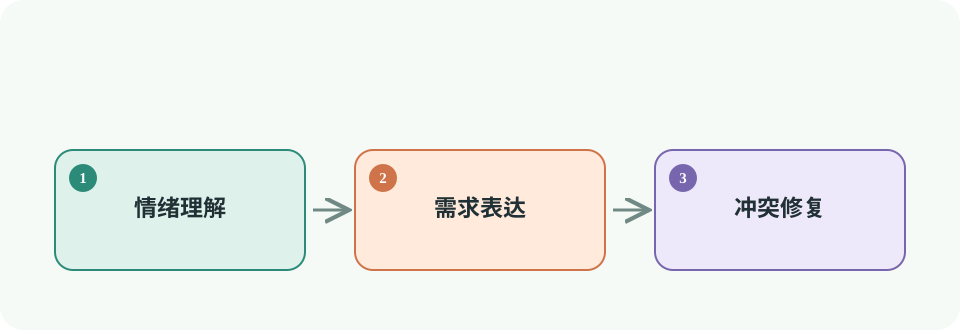
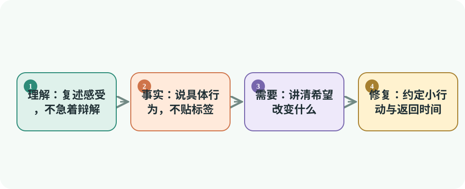

亲密关系沟通：先理解感受，再表达需求
让情绪被听见，同时把模糊抱怨转成可讨论的具体请求
01 · 从一个具体问题开始
伴侣争执常常从一件具体小事开始，随后迅速变成“你总是”“你从来不”。一方想解释原因，另一方却希望先确认影响和感受。
先核对对方的感受和担忧，再用具体行为描述自己的感受与需要，最后提出小而可兑现的修复安排。
02 · 把方法拆成可观察的动作
在亲密关系、代际关系与亲子教育中，兼顾情绪理解、个人边界和可执行安排。 这些动作是教学工具，不是必须逐字套用的公式。

情绪理解
先反映对方感受并确认理解是否准确；理解不是全部认同。
需求表达
用“我观察到…我感到…我需要…”说明行为影响和具体请求。
冲突修复
协商一项可执行改变，情绪过强时约定暂停与返回时间。
03 · 多轮案例：回应怎样随着信息推进
晚归忘记通知的案例展示如何承认影响，并约定可兑现的提醒动作。
晚归没有提前说
伴侣等你吃饭却一直没消息；临时会议延长，但你忘记通知。
沟通目标：以后晚于约定半小时就提前说明。
你怎么这么晚才回？
今天临时会议拖长了，我又忘记告诉你，让你一直等着吃饭。你生气有道理，对不起。我先听你说，最难受的是等太久，还是不知道我什么时候回来？
你就不能提前发消息吗？
你说得对，发一条消息只需要一点时间。下次只要预见会比约定晚半小时，就先给你一个简短消息。
示范回应用于观察结构，不是唯一正确答案。真实沟通应根据事实、关系和风险调整。

04 · 交互拆解：逐步检查每个动作
选择一个动作，观察它解决的具体问题。所有步骤默认都在页面中可读；按钮只是帮助你聚焦其中一层。
怎样把沟通原则变成下一句话
情绪理解
先反映对方感受并确认理解是否准确；理解不是全部认同。
检查点：这一轮是否回应了对方刚刚提出的具体问题？
需求表达
用“我观察到…我感到…我需要…”说明行为影响和具体请求。
检查点：这一轮是否回应了对方刚刚提出的具体问题？
冲突修复
协商一项可执行改变，情绪过强时约定暂停与返回时间。
检查点：这一轮是否回应了对方刚刚提出的具体问题？
当前聚焦第 1 步。
05 · 常见失误与适用边界
- 把“我理解你”当成结束讨论的口头禅。
- 用绝对承诺保证以后永不犯错。
- 在情绪过高时继续逼迫对方立刻谈完。
如果存在暴力、威胁、胁迫、自伤风险或明显权力滥用，不要把继续沟通或说服对方当成唯一任务；优先考虑现实安全、可信任的人和适当的专业支持。
06 · 把文章变成一次练习
选一件低风险的小摩擦，练习先复述对方的担忧，再提出一项具体请求。
晚归没有提前说
在训练页打开这道案例，先隐藏参考、逐轮作答，再做四维自评。
07 · 来源与说明
本文区分外部框架、项目教学改编和案例示范。引用只支持来源中明确涉及的概念，不代表本文所有表达步骤均经过实验验证。
- The Gottman Institute · Repair Attempts · https://www.gottman.com/blog/repair-secret-weapon-emotionally-connected-couples/（Repair attempts in couple conflict）
本文的案例、步骤顺序、互动拆解和四维自评属于言习课程设计。项目自评用于个人纵向复盘，不是经心理测量验证的量表，也不是任何机构的认证课程。